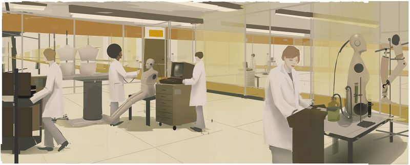

Guarde o dia
Escreva uma memória, uma ideia ou só o que aconteceu hoje.
DIÁRIO
UM LUGAR PARA O QUE FAZ PARTE DA SUA VIDA
O OBUNTOS junta o que costuma ficar espalhado: pensamentos, compromissos, pessoas, metas, arquivos e dinheiro. Você organiza no seu ritmo e volta quando precisar.
DENTRO DO OBUNTOS
Você não precisa adaptar a vida a uma ferramenta. O OBUNTOS separa cada coisa no lugar certo e deixa tudo perto quando você quiser voltar.
PARA O QUE VOCÊ QUER LEMBRAR
Sem transformar tudo em pastas frias. O arquivo acompanha o jeito como você pensa: o que aconteceu, quem estava lá, o que vem depois e o que vale guardar.
Escreva uma memória, uma ideia ou só o que aconteceu hoje.
DIÁRIOPessoas, detalhes, datas e histórias que fazem sentido para você.
PESSOASCompromissos, tarefas e metas sem deixar a rotina pesar.
CALENDÁRIOFotos, documentos, referências e anexos no mesmo arquivo.
BIBLIOTECAO ARQUIVO COMPLETO
Tudo conversa dentro do mesmo arquivo pessoal.
SEUS DADOS, DO SEU JEITO
Você pode usar o OBUNTOS só neste computador. Se quiser, pode adicionar uma conta para sincronização ou usar um pendrive como forma extra de acesso. O básico continua simples.
PRONTO PARA COMEÇAR
Baixe o setup, siga a instalação do Windows e abra o seu arquivo pessoal.
Baixar para Windows↓ee42a21bb62ecaf82ba13a2d749056f6be7b83dd397affc75509d9b5ff4b75ffANTES DE BAIXAR
O resto você descobre usando.